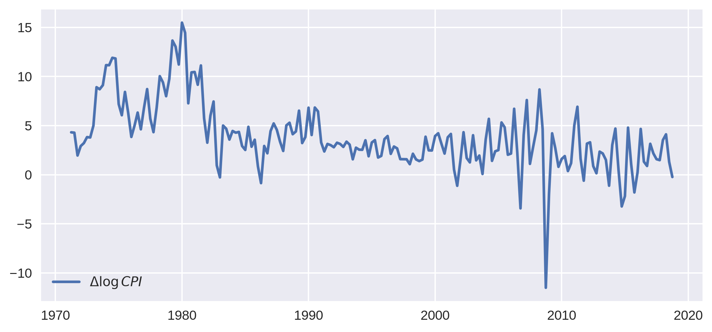
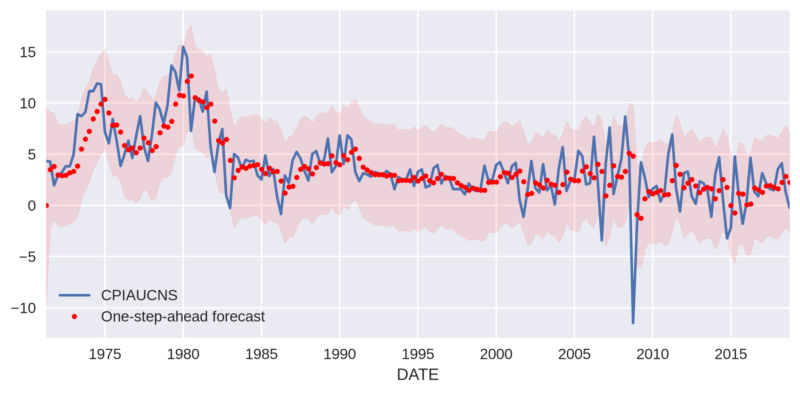
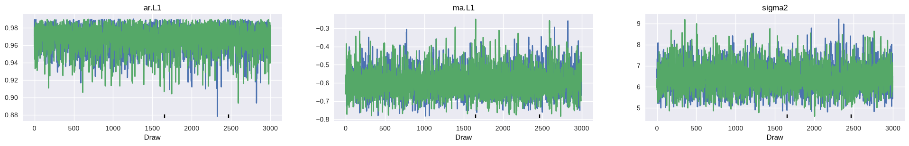
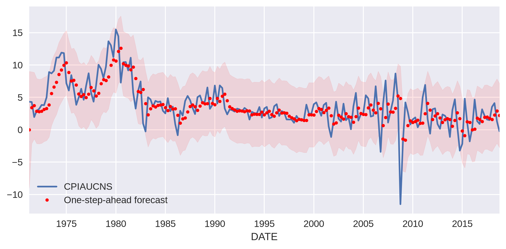
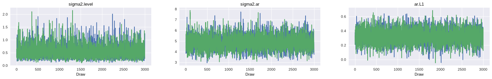
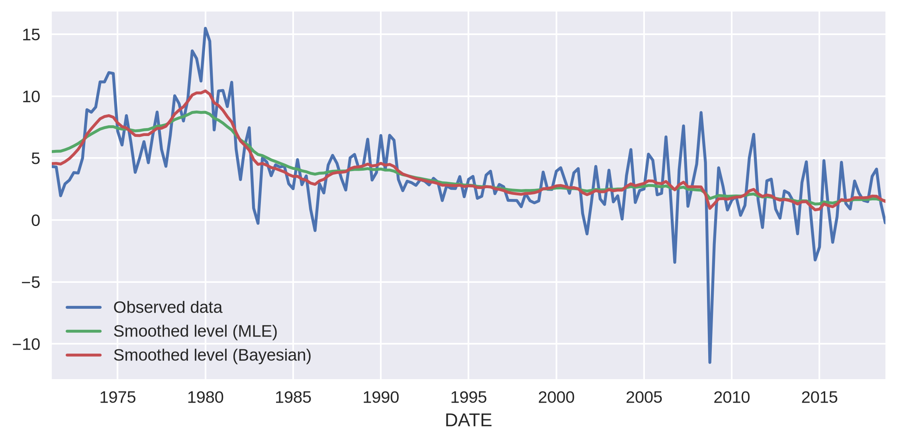

Fast Bayesian estimation of SARIMAX models#
Introduction#
This notebook will show how to use fast Bayesian methods to estimate SARIMAX (Seasonal AutoRegressive Integrated Moving Average with eXogenous regressors) models. These methods can also be parallelized across multiple cores.
Here, fast methods means a version of Hamiltonian Monte Carlo called the No-U-Turn Sampler (NUTS) developed by Hoffmann and Gelman: see Hoffman, M. D., & Gelman, A. (2014). The No-U-Turn sampler: adaptively setting path lengths in Hamiltonian Monte Carlo. Journal of Machine Learning Research, 15(1), 1593-1623.. As they say, “the cost of HMC per independent sample from a target distribution of dimension \(D\) is roughly \(\mathcal{O}(D^{5/4})\), which stands in sharp contrast with the \(\mathcal{O}(D^{2})\) cost of random-walk Metropolis”. So for problems of larger dimension, the time-saving with HMC is significant. However it does require the gradient, or Jacobian, of the model to be provided.
This notebook will combine the Python libraries statsmodels, which does econometrics, and PyMC, which is for Bayesian estimation, to perform fast Bayesian estimation of a simple SARIMAX model, in this case an ARMA(1, 1) model for US CPI.
Note that, for simple models like AR(p), base PyMC is a quicker way to fit a model; there are examples in the PyMC example gallery. The advantage of using statsmodels is that it gives access to methods that can solve a vast range of statespace models.
The model we’ll solve is given by
with 1 auto-regressive term and 1 moving average term. In statespace form it is written as:
The code will follow these steps:
Import external dependencies
Download and plot the data on US CPI
Simple maximum likelihood estimation (MLE) as an example
Definitions of helper functions to provide tensors to the library doing Bayesian estimation
Bayesian estimation via NUTS
Application to US CPI series
Finally, Appendix A shows how to re-use the helper functions from step (4) to estimate a different state space model, UnobservedComponents, using the same Bayesian methods.
1. Import external dependencies#
[1]:
%matplotlib inline
import matplotlib.pyplot as plt
import numpy as np
import pandas as pd
import pymc as pm
import pytensor.tensor as pt
import statsmodels.api as sm
from pandas.plotting import register_matplotlib_converters
from pandas_datareader.data import DataReader
from pytensor.graph.op import Op
plt.style.use("seaborn-v0_8")
register_matplotlib_converters()
2. Download and plot the data on US CPI#
We’ll get the data from FRED:
[2]:
cpi = DataReader("CPIAUCNS", "fred", start="1971-01", end="2018-12")
cpi.index = pd.DatetimeIndex(cpi.index, freq="MS")
# Define the inflation series that we'll use in analysis
inf = np.log(cpi).resample("QS").mean().diff()[1:] * 400
inf = inf.dropna()
print(inf.head())
CPIAUCNS
DATE
1971-04-01 4.316424
1971-07-01 4.279518
1971-10-01 1.956799
1972-01-01 2.917767
1972-04-01 3.219096
[3]:
# Plot the series
fig, ax = plt.subplots(figsize=(9, 4), dpi=300)
ax.plot(inf.index, inf, label=r"$\Delta \log CPI$", lw=2)
ax.legend(loc="lower left")
plt.show()

3. Fit the model with maximum likelihood#
Statsmodels does all of the hard work of this for us - creating and fitting the model takes just two lines of code. The model order parameters correspond to auto-regressive, difference, and moving average orders respectively.
[4]:
# Create an SARIMAX model instance - here we use it to estimate
# the parameters via MLE using the `fit` method, but we can
# also re-use it below for the Bayesian estimation
mod = sm.tsa.statespace.SARIMAX(inf, order=(1, 0, 1))
res_mle = mod.fit(disp=False)
print(res_mle.summary())
SARIMAX Results
==============================================================================
Dep. Variable: CPIAUCNS No. Observations: 191
Model: SARIMAX(1, 0, 1) Log Likelihood -448.685
Date: Fri, 24 Jul 2026 AIC 903.370
Time: 15:25:32 BIC 913.127
Sample: 04-01-1971 HQIC 907.322
- 10-01-2018
Covariance Type: opg
==============================================================================
coef std err z P>|z| [0.025 0.975]
------------------------------------------------------------------------------
ar.L1 0.9785 0.015 64.545 0.000 0.949 1.008
ma.L1 -0.6342 0.057 -11.073 0.000 -0.747 -0.522
sigma2 6.3682 0.323 19.695 0.000 5.734 7.002
===================================================================================
Ljung-Box (L1) (Q): 4.77 Jarque-Bera (JB): 699.70
Prob(Q): 0.03 Prob(JB): 0.00
Heteroskedasticity (H): 1.72 Skew: -1.48
Prob(H) (two-sided): 0.03 Kurtosis: 11.90
===================================================================================
Warnings:
[1] Covariance matrix calculated using the outer product of gradients (complex-step).
It’s a good fit. We can also get the series of one-step ahead predictions and plot it next to the actual data, along with a confidence band.
[5]:
predict_mle = res_mle.get_prediction()
predict_mle_ci = predict_mle.conf_int()
lower = predict_mle_ci["lower CPIAUCNS"]
upper = predict_mle_ci["upper CPIAUCNS"]
# Graph
fig, ax = plt.subplots(figsize=(9, 4), dpi=300)
# Plot data points
inf.plot(ax=ax, style="-", label="Observed")
# Plot predictions
predict_mle.predicted_mean.plot(ax=ax, style="r.", label="One-step-ahead forecast")
ax.fill_between(predict_mle_ci.index, lower, upper, color="r", alpha=0.1)
ax.legend(loc="lower left")
plt.show()

4. Helper functions to provide tensors to the library doing Bayesian estimation#
We’re almost on to the magic but there are a few preliminaries. Feel free to skip this section if you’re not interested in the technical details.
Technical Details#
PyMC is a Bayesian estimation library (“Bayesian Modeling and Probabilistic Programming in Python”) that is a) fast and b) optimized for Bayesian machine learning, for instance Bayesian neural networks. To do all of this, it is built on top of PyTensor, a library that aims to evaluate tensors very efficiently and provide symbolic differentiation (necessary for any kind of deep learning). It is the symbolic differentiation that means PyMC can use NUTS on any problem formulated within PyMC.
We are not formulating a problem directly in PyMC; we’re using statsmodels to specify the statespace model and solve it with the Kalman filter. So we need to put the plumbing of statsmodels and PyMC together, which means wrapping the statsmodels SARIMAX model object in a PyTensor-flavored wrapper before passing information to PyMC for estimation.
Because of this, we can’t use PyTensor’s auto-differentiation directly. Happily, statsmodels SARIMAX objects have a method to return the Jacobian evaluated at the parameter values. We’ll be making use of this to provide gradients so that we can use NUTS.
Defining helper functions to translate models into a PyMC friendly form#
First, we’ll create the PyTensor wrappers. They will be in the form of ‘Ops’, operation objects, that ‘perform’ particular tasks. They are initialized with a statsmodels model instance.
Although this code may look somewhat opaque, it is generic for any state space model in statsmodels.
[6]:
class Loglike(Op):
itypes = [pt.dvector] # expects a vector of parameter values when called
otypes = [pt.dscalar] # outputs a single scalar value (the log likelihood)
def __init__(self, model):
self.model = model
self.score = Score(self.model)
def perform(self, node, inputs, outputs):
(theta,) = inputs # contains the vector of parameters
llf = self.model.loglike(theta)
outputs[0][0] = np.array(llf) # output the log-likelihood
def grad(self, inputs, g):
# the method that calculates the gradients - it actually returns the
# vector-Jacobian product - g[0] is a vector of parameter values
(theta,) = inputs # our parameters
out = [g[0] * self.score(theta)]
return out
class Score(Op):
itypes = [pt.dvector]
otypes = [pt.dvector]
def __init__(self, model):
self.model = model
def perform(self, node, inputs, outputs):
(theta,) = inputs
outputs[0][0] = self.model.score(theta)
5. Bayesian estimation with NUTS#
The next step is to set the parameters for the Bayesian estimation, specify our priors, and run it.
[7]:
# Set sampling params
ndraws = 3000 # number of draws from the distribution
nburn = 600 # number of "burn-in points" (which will be discarded)
Now for the fun part! There are three parameters to estimate: \(\phi\), \(\theta_1\), and \(\sigma\). We’ll use uninformative uniform priors for the first two, and an inverse gamma for the last one. Then we’ll run the inference optionally using as many computer cores as I have.
[8]:
# Construct an instance of the PyTensor wrapper defined above, which
# will allow PyMC to compute the likelihood and Jacobian in a way
# that it can make use of. Here we are using the same model instance
# created earlier for MLE analysis (we could also create a new model
# instance if we preferred)
loglike = Loglike(mod)
with pm.Model() as m:
# Priors
arL1 = pm.Uniform("ar.L1", -0.99, 0.99)
maL1 = pm.Uniform("ma.L1", -0.99, 0.99)
sigma2 = pm.InverseGamma("sigma2", 2, 4)
# convert variables to tensor vectors
theta = pt.as_tensor_variable([arL1, maL1, sigma2])
# use a Potential to add the statsmodels log-likelihood to the model
pm.Potential("likelihood", loglike(theta))
# Draw samples
trace = pm.sample(
ndraws,
tune=nburn,
cores=1,
compute_convergence_checks=False,
)
/opt/hostedtoolcache/Python/3.14.6/x64/lib/python3.14/site-packages/pytensor/gradient.py:1327: FutureWarning: Loglike should implement `pullback` instead of `L_op`/`grad`. Direct `L_op`/`grad` implementations are deprecated and will stop being called in a future version.
input_grads = node.op.pullback(inputs, node.outputs, new_output_grads)
Initializing NUTS using jitter+adapt_diag...
/opt/hostedtoolcache/Python/3.14.6/x64/lib/python3.14/site-packages/pytensor/gradient.py:1327: FutureWarning: Loglike should implement `pullback` instead of `L_op`/`grad`. Direct `L_op`/`grad` implementations are deprecated and will stop being called in a future version.
input_grads = node.op.pullback(inputs, node.outputs, new_output_grads)
/opt/hostedtoolcache/Python/3.14.6/x64/lib/python3.14/site-packages/pytensor/link/numba/dispatch/basic.py:234: UserWarning: Numba will use object mode to run Loglike's perform method. Set `pytensor.config.compiler_verbose = True` to see more details.
warnings.warn(
/opt/hostedtoolcache/Python/3.14.6/x64/lib/python3.14/site-packages/pytensor/link/numba/dispatch/basic.py:234: UserWarning: Numba will use object mode to run Score's perform method. Set `pytensor.config.compiler_verbose = True` to see more details.
warnings.warn(
Sequential sampling (2 chains in 1 job)
NUTS: [ar.L1, ma.L1, sigma2]
Sampling 2 chains for 600 tune and 3_000 draw iterations (1_200 + 6_000 draws total) took 254 seconds.
Note that the NUTS sampler is auto-assigned because we provided gradients. PyMC will use Metropolis or Slicing samplers if it does not find that gradients are available. There are an impressive number of draws per second for a “black box” style computation! However, note that if the model can be represented directly by PyMC (like the AR(p) models mentioned above), then computation can be substantially faster.
Inference is complete, but are the results any good? There are a number of ways to check. The first is to look at the posterior distributions:
[9]:
_ = pm.plot_trace(trace)
/tmp/ipykernel_4053/3091233998.py:1: DeprecationWarning: `pymc.plot_trace` was moved out of the root namespace and will be removed in the first PyMC release of 2027. Use `pymc.plots.plot_trace` instead.
_ = pm.plot_trace(trace)

The estimated posteriors clearly peak close to the parameters found by MLE. We can also see a summary of the estimated values:
[10]:
pm.summary(trace, ci_kind="hdi", ci_prob=0.94)
/tmp/ipykernel_4053/2997737606.py:1: DeprecationWarning: `pymc.summary` was moved out of the root namespace and will be removed in the first PyMC release of 2027. Use `pymc.stats.summary` instead.
pm.summary(trace, ci_kind="hdi", ci_prob=0.94)
[10]:
| mean | sd | hdi94_lb | hdi94_ub | ess_bulk | ess_tail | r_hat | mcse_mean | mcse_sd | |
|---|---|---|---|---|---|---|---|---|---|
| ar.L1 | 0.9689 | 0.0146 | 0.94 | 0.99 | 2362 | 2142 | 1.00 | 0.00028 | 0.00026 |
| ma.L1 | -0.594 | 0.074 | -0.72 | -0.44 | 3074 | 2654 | 1.00 | 0.0014 | 0.0011 |
| sigma2 | 6.43 | 0.64 | 5.3 | 7.7 | 3314 | 3157 | 1.00 | 0.011 | 0.0085 |
Here \(\hat{R}\) is the Gelman-Rubin statistic. It tests for lack of convergence by comparing the variance between multiple chains to the variance within each chain. If convergence has been achieved, the between-chain and within-chain variances should be identical. If \(\hat{R}<1.2\) for all model parameters, we can have some confidence that convergence has been reached.
Additionally, the highest posterior density interval (the gap between the two values of HPD in the table) is small for each of the variables.
6. Application of Bayesian estimates of parameters#
We’ll now re-instigate a version of the model but using the parameters from the Bayesian estimation, and again plot the one-step-ahead forecasts.
[11]:
# Retrieve the posterior means
params = pm.summary(trace, round_to="none")["mean"].values
# Construct results using these posterior means as parameter values
res_bayes = mod.smooth(params)
predict_bayes = res_bayes.get_prediction()
predict_bayes_ci = predict_bayes.conf_int()
lower = predict_bayes_ci["lower CPIAUCNS"]
upper = predict_bayes_ci["upper CPIAUCNS"]
# Graph
fig, ax = plt.subplots(figsize=(9, 4), dpi=300)
# Plot data points
inf.plot(ax=ax, style="-", label="Observed")
# Plot predictions
predict_bayes.predicted_mean.plot(ax=ax, style="r.", label="One-step-ahead forecast")
ax.fill_between(predict_bayes_ci.index, lower, upper, color="r", alpha=0.1)
ax.legend(loc="lower left")
plt.show()

Appendix A. Application to UnobservedComponents models#
We can reuse the Loglike and Score wrappers defined above to consider a different state space model. For example, we might want to model inflation as the combination of a random walk trend and autoregressive error term:
This model can be constructed in Statsmodels with the UnobservedComponents class using the rwalk and autoregressive specifications. As before, we can fit the model using maximum likelihood via the fit method.
[12]:
# Construct the model instance
mod_uc = sm.tsa.UnobservedComponents(inf, "rwalk", autoregressive=1)
# Fit the model via maximum likelihood
res_uc_mle = mod_uc.fit()
print(res_uc_mle.summary())
Unobserved Components Results
==============================================================================
Dep. Variable: CPIAUCNS No. Observations: 191
Model: random walk Log Likelihood -440.855
+ AR(1) AIC 887.709
Date: Fri, 24 Jul 2026 BIC 897.450
Time: 15:30:16 HQIC 891.655
Sample: 04-01-1971
- 10-01-2018
Covariance Type: opg
================================================================================
coef std err z P>|z| [0.025 0.975]
--------------------------------------------------------------------------------
sigma2.level 0.2037 0.156 1.310 0.190 -0.101 0.508
sigma2.ar 5.2920 0.338 15.665 0.000 4.630 5.954
ar.L1 0.4005 0.096 4.161 0.000 0.212 0.589
===================================================================================
Ljung-Box (L1) (Q): 1.46 Jarque-Bera (JB): 521.69
Prob(Q): 0.23 Prob(JB): 0.00
Heteroskedasticity (H): 1.59 Skew: -1.30
Prob(H) (two-sided): 0.07 Kurtosis: 10.69
===================================================================================
Warnings:
[1] Covariance matrix calculated using the outer product of gradients (complex-step).
As noted earlier, the PyTensor wrappers (Loglike and Score) that we created above are generic, so we can re-use essentially the same code to explore the model with Bayesian methods.
[13]:
# Set sampling params
ndraws = 3000 # number of draws from the distribution
nburn = 600 # number of "burn-in points" (which will be discarded)
[14]:
# Here we follow the same procedure as above, but now we instantiate the
# PyTensor wrapper `Loglike` with the UC model instance instead of the
# SARIMAX model instance
loglike_uc = Loglike(mod_uc)
with pm.Model():
# Priors
sigma2level = pm.InverseGamma("sigma2.level", 1, 1)
sigma2ar = pm.InverseGamma("sigma2.ar", 1, 1)
arL1 = pm.Uniform("ar.L1", -0.99, 0.99)
# convert variables to tensor vectors
theta_uc = pt.as_tensor_variable([sigma2level, sigma2ar, arL1])
# use a Potential to add the statsmodels log-likelihood to the model
pm.Potential("likelihood", loglike_uc(theta_uc))
# Draw samples
trace_uc = pm.sample(
ndraws,
tune=nburn,
cores=1,
compute_convergence_checks=False,
)
/opt/hostedtoolcache/Python/3.14.6/x64/lib/python3.14/site-packages/pytensor/gradient.py:1327: FutureWarning: Loglike should implement `pullback` instead of `L_op`/`grad`. Direct `L_op`/`grad` implementations are deprecated and will stop being called in a future version.
input_grads = node.op.pullback(inputs, node.outputs, new_output_grads)
Initializing NUTS using jitter+adapt_diag...
/opt/hostedtoolcache/Python/3.14.6/x64/lib/python3.14/site-packages/pytensor/gradient.py:1327: FutureWarning: Loglike should implement `pullback` instead of `L_op`/`grad`. Direct `L_op`/`grad` implementations are deprecated and will stop being called in a future version.
input_grads = node.op.pullback(inputs, node.outputs, new_output_grads)
/opt/hostedtoolcache/Python/3.14.6/x64/lib/python3.14/site-packages/pytensor/link/numba/dispatch/basic.py:234: UserWarning: Numba will use object mode to run Loglike's perform method. Set `pytensor.config.compiler_verbose = True` to see more details.
warnings.warn(
/opt/hostedtoolcache/Python/3.14.6/x64/lib/python3.14/site-packages/pytensor/link/numba/dispatch/basic.py:234: UserWarning: Numba will use object mode to run Score's perform method. Set `pytensor.config.compiler_verbose = True` to see more details.
warnings.warn(
Sequential sampling (2 chains in 1 job)
NUTS: [sigma2.level, sigma2.ar, ar.L1]
Sampling 2 chains for 600 tune and 3_000 draw iterations (1_200 + 6_000 draws total) took 197 seconds.
And as before we can plot the marginal posteriors. In contrast to the SARIMAX example, here the posterior modes are somewhat different from the MLE estimates.
[15]:
_ = pm.plot_trace(trace_uc)

[16]:
pm.summary(trace_uc, ci_kind="hdi", ci_prob=0.94)
[16]:
| mean | sd | hdi94_lb | hdi94_ub | ess_bulk | ess_tail | r_hat | mcse_mean | mcse_sd | |
|---|---|---|---|---|---|---|---|---|---|
| sigma2.level | 0.54 | 0.255 | 0.2 | 1.1 | 3863 | 4132 | 1.00 | 0.0041 | 0.0044 |
| sigma2.ar | 4.84 | 0.66 | 3.7 | 6.1 | 3783 | 4056 | 1.00 | 0.011 | 0.0081 |
| ar.L1 | 0.329 | 0.102 | 0.14 | 0.52 | 4678 | 4673 | 1.00 | 0.0015 | 0.0011 |
[17]:
# Retrieve the posterior means
params = pm.summary(trace_uc, round_to="none")["mean"].values
# Construct results using these posterior means as parameter values
res_uc_bayes = mod_uc.smooth(params)
One benefit of this model is that it gives us an estimate of the underling “level” of inflation, using the smoothed estimate of \(\mu_t\), which we can access as the “level” column in the results objects’ states.smoothed attribute. In this case, because the Bayesian posterior mean of the level’s variance is larger than the MLE estimate, its estimated level is a little more volatile.
[18]:
# Graph
fig, ax = plt.subplots(figsize=(9, 4), dpi=300)
# Plot data points
inf["CPIAUCNS"].plot(ax=ax, style="-", label="Observed data")
# Plot estimate of the level term
res_uc_mle.states.smoothed["level"].plot(ax=ax, label="Smoothed level (MLE)")
res_uc_bayes.states.smoothed["level"].plot(ax=ax, label="Smoothed level (Bayesian)")
ax.legend(loc="lower left");
